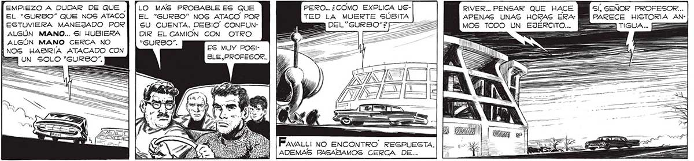
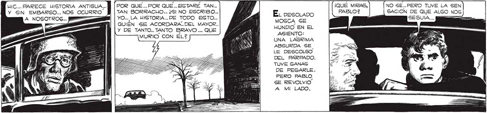
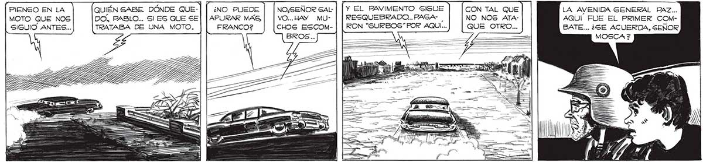

PERO... ¿COMO EXPLICA UGTED LA MUERTE SÚBITA ADEL“GURBSO"2F 300 EMPIEZO A DUDAR DE QUE EL “GURBO” QUE NOS ATACO ESTUVIERA MANEJADO POR ALGÚN MANO... S| HUBIERA ALGÚN MANO CERCA NO NOS HABRIA ATACADO CON LO MAS PROBABLE ES QUE EL “GURBO” NOS ATACO POR SU CUENTA. DEBIO” CONFUNDIR EL CAMION CON OTRO “SURBO”. RIVER... PENSAR QUE HACE Gí, SEÑOR PROFESOR... APENAS UNAS HORAS ERA: PARECE HISTORIA ANMOS TODO UN EJÉRCITO... ES MUY POSIBLE.PROFESOR.., Pava: NO ENCONTRO” RESPUESTA. ADEMAS PASABAMOS CERCA DE... HIC... PARECE HISTORIA ANTIGUA... ] [| POR QUE... POR QUE... ESTARE TAN... ¿QUÉ MIRAS, NO SE... PERO TUVE LA SEN Y GIN EMBARGO..NOS OCURRIO. MM | TAN BORRACUO.. ¿SI NO ESCRIBO... A sa PABLO? SACION DE QUE ALGO NOS YO... LA HISTORIA... DE TODO ESTO.. EOS El E QUIÉN SE ACORDARA..DEL MAYOR.. MAD EN EL Y DE TANTO... TANTO BRAVO ... QUE MURIO CON EL? ASIENTO: e UNA LAGRIMA ABSURDA SE LE DESCOLGO DEL PARPADO. TUVE GANAS 1 DE PEGARLE. ¡ua PERO PABLO E SE REVOLVIO. mi MALO PIENSO EN LA MOTO QUE NOS SIGUIO ANTES... NO.SEÑOR SAL | | Y EL PAVIMENTO SIGUE CON TAL QUE LA AVENIDA GENERAL PAZ... VO...HAY MU- RESQUEBRADO... PASA- | NO NOS ATA- AQUÍ FUE EL PRIMER COMCHOS ESCOM- | | RON “SURBOS”POR AQUI... QUE OTRO... BATE... ¿SE ACUERDA, SENOR


